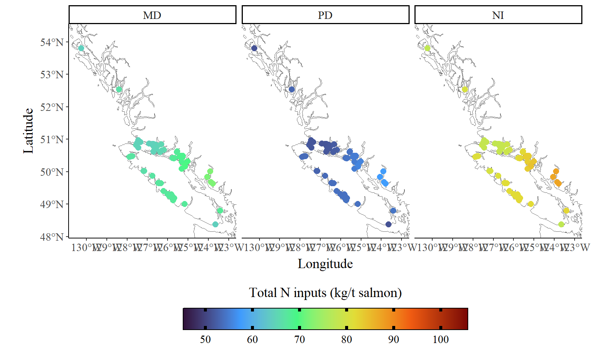
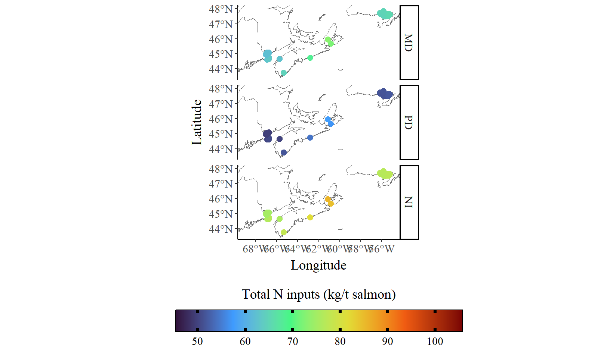
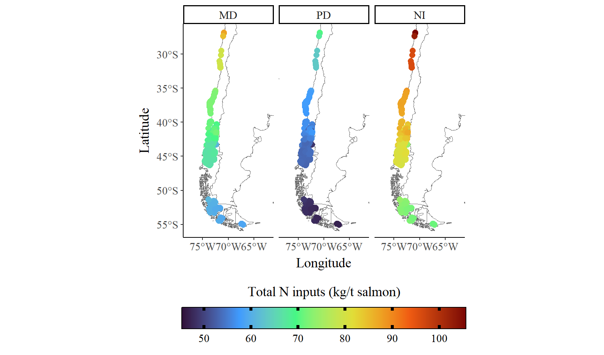
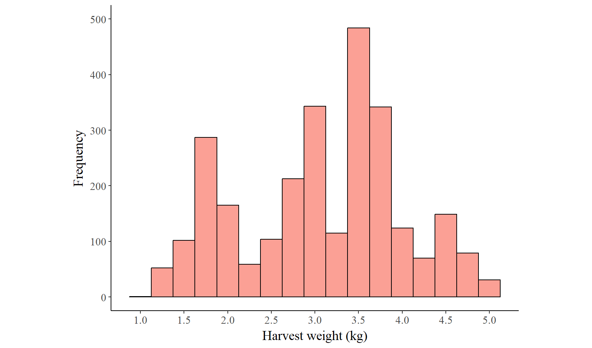
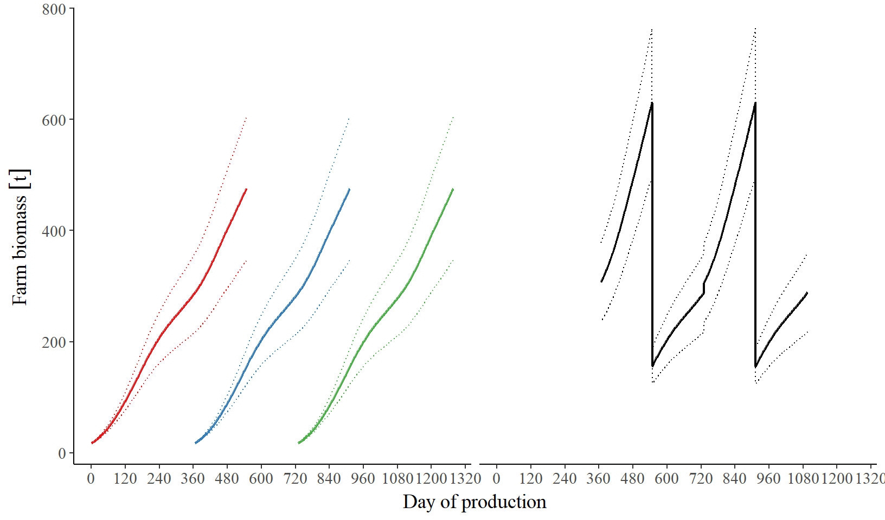
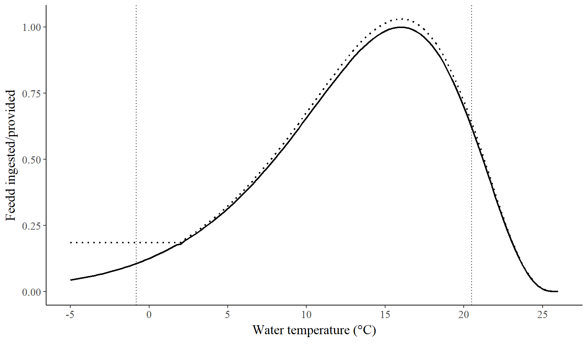
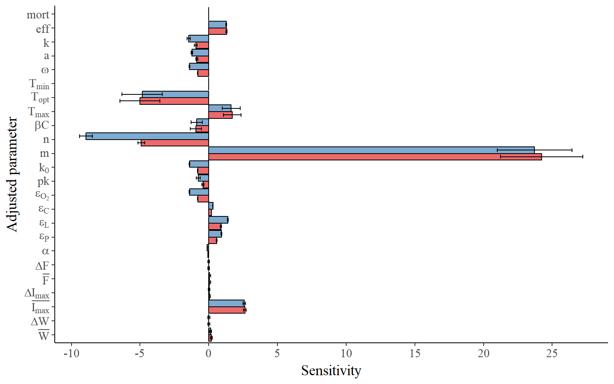

Local to Global Mariculture Modelling
Project Documentation
1 Table of Contents
All code and processes for this project are linked below. Note that some scripts require access to raw data which is not stored on Github. While this page (the index) has code that runs prior to rendering, all code in the subsequent pages has not been run for rendering.
1.1 Main scripts
The main scripts for this project focus on setting up the model to examine the differences in total protein, carbohydrate, lipid and nitrogen losses between feeds.
| Page | Description |
|---|---|
| Data Tidying | Initial data tidying and preparation |
| Extracting Production Locations | Identification and processing of mariculture production site locations |
| Assessing Species Potential | Evaluation of species suitability for different locations |
| Extracting Temperatures | SST data extraction and processing for model inputs |
| Formulating Feeds | Feed composition formulation for model runs |
| Running Atlantic Salmon Model | Atlantic salmon growth model execution |
1.2 Extra scripts
The extra scripts for this project involved some exploration into potential impacts of nutrient losses. These will likely not make it into the final manuscript.
| Page | Description |
|---|---|
| Species Layers | Spatial analysis of species distribution layers |
| Relative N Inputs | Analysis of nitrogen input patterns and their relative impacts |
2 Results
Table 1 is a summary of all the results I’ve processed so far, basically trying to acertain all the major differences in inputs between the feeds.
| Description | Plant-dominant | Marine-dominant | Novel-inclusive | Change from PD to MD (%) | Change from PD to NI (%) |
|---|---|---|---|---|---|
| Salmon biomass produced (t) | 847.5 | 811.6 | 865.2 | -4.3 | 2.1 |
| Feed provided (t) | 909.5 | 885.4 | 921.3 | -2.7 | 1.3 |
| Feed provided (kg/kg salmon) | 1.09 | 1.11 | 1.08 | 1.7 | -0.8 |
| Uneaten feed (t) | 25 | 24.2 | 25.3 | -3.6 | 1 |
| Excreted waste (t) | 101.8 | 75.6 | 102.2 | -25.8 | 0.4 |
| Total waste (E+U, t) | 126.9 | 99.7 | 127.5 | -21.4 | 0.5 |
| Proportion of total waste composed of excretion (%) | 80.2 | 75.7 | 80.1 | ||
| Total protein waste (t) | 43.5 | 52.2 | 67.3 | 23.4 | 44.6 |
| Total carbohydrate waste (t) | 62 | 31.6 | 39.3 | -38.9 | -36.8 |
| Total lipid waste (t) | 21.4 | 16 | 20.9 | -24.9 | -2.2 |
| Proportion of protein waste from excretion (%) | 77.2 | 75.3 | 81.4 | ||
| Proportion of carbohydrate waste from excretion (%) | 90.6 | 86.4 | 90.8 | ||
| Proportion of lipid waste from excretion (%) | 56.1 | 56.2 | 56 | ||
| Total N from uneaten feed (t) | 61.8 | 80.4 | 78.1 | 30 | 26.3 |
| Total N from excreted waste (t) | 210.2 | 245.6 | 342.4 | 16.8 | 62.9 |
| Total N inputs (E+U, t) | 272 | 326 | 420.5 | 19.8 | 54.6 |
So here are the major themes I’m getting from Table 1:
*Note that when I refer to “FCE” here I’m talking about the PLC weight (protein + lipid + carbohydrate) weight of feed, which may differ from its actual weight because of the inclusion of minerals and non-digestible material.
- The NI diet was more efficient than the PD diet. When farms were fed the NI diet they had an average FCE* of 1.08, compared to the average FCE of 1.09 when farms were fed the PD diet, and feeding the NI diet resulted in 2.1% more biomass produced with the same population compared to the PD diet.
- Despite this, nutrients lost to the environment were generally highest in the NI diet and lowest in the MD diet.
- In terms of total waste inputs (bulk mass), the NI and PD diets were very similar (probably due to their very similar ingredient compositions). The MD diet had markedly lower total waste inputs than either the PD or NI diets.
- However, the PLC composition of nutrients was very different between the diets (Figure 1). The PD diet had the lowest protein waste output and the NI diet had the highest, while the MD diet had the lowest carbohydrate and lipid waste outputs and the PD diet the highest. Overall, changing from the PD diet to the NI diet would result in a 44.6% increase in protein waste but a 36.8% and 2.2% reduction in carbohydrates and lipids respectively, while changing to the MD diet would result in a 23.4% increase in protein waste but a 36.8% and 2.2% reduction in carbohydrates and lipids respectively.
- Overall, nitrogen inputs were 54.6% higher in the NI diet and 19.8% higher in the MD diet.
3 Spatially




4 Supplemental methods
4.1 Population and biomass
Each farm’s final population was calculated by dividing the production tonnage required by the average modelled individual harvest size for each farm (when feed reference feed, Figure 3). A population timeseries was then generated using the standard mortality rate (0.06 % d\(^{-1}\)).

Using this method, a farm’s ‘population’ is not a good representation of the actual number of individuals being farmed, but it ensures each farm location is producing the correct tonnage while allowing comparisons between the different feeds.

By this method, farm biomass as predicted by the model predicted farm tonnage relatively accurately. Predicted farm biomass was within -3.2% – 3% of tonnage produced.
4.2 Feed provision and feeding response to temperature
Figure 5 shows the response of food ingested to temperature, and the food provided in response.

4.3 Modelled experimental feeds
| Feed | Protein | Lipid | Carbohydrate |
|---|---|---|---|
| Plant-dominant | 36% (89.4%) | 34% (96%) | 21% (69.7%) |
| Marine-dominant | 48% (90.5%) | 26.2% (96%) | 15.9% (80.1%) |
| Novel-inclusive | 44.8% (86.3%) | 32.8% (96%) | 13.1% (69.4%) |
4.4 Model sensitivity to parameter changes
Parameter sensitivity was tested by varying each parameter by \(\pm 10\)% and calculating sensitivity as \(S_p = \frac{(P_{1.1} - P_{0.9})}{0.2 \times P_1}\), where \(S\) is the sensitivity of the measured variable to changes in parameter \(p\), and \(P_{1.1}\), \(P_{0.9}\), and \(P_{1}\) are the value of the measured variable when the model is run with parameter \(p\) at 110%, 90%, and 100% of its value respectively. The population-level parameters (\(\overline{W}\), \(\Delta{W}\), \(\overline{I_{max}}\), \(\Delta{I_{max}}\), \(\overline{F}\), \(\Delta{F}\)) were tested with a population of of 5000 on a random 10% of farms, while all other parameters were tested across all farms with a population of 10 (Figure 6).

5 Code and packages used
All analysis was conducted in R version 4.4.2 “Pile of Leaves” (R Core Team 2019). Major packages used include packages aquamapsdata version 0.1.6 (Skyttner 2020), arrow version 20.0.0.2 (Richardson et al. 2024), dplyr version 1.1.4 (Wickham et al. 2023), furrr version 0.3.1 (Vaughan and Dancho 2022), future version 1.58.0 (Bengtsson 2021), ggplot2 version 3.5.2 (Wickham 2016), lubridate version 1.9.4 (Grolemund and Wickham 2011), magrittr version 2.0.3 (Bache and Wickham 2022), rnaturalearth version 1.1.0 (Massicotte and South, n.d.), sf version 1.0.21 (Pebesma 2018), stringr version 1.5.1 (Wickham 2023), targets version 1.11.3 (Landau 2021), terra version 1.8.60 (Hijmans 2024), tidyr version 1.3.1 (Wickham, Vaughan, and Girlich 2024), units version 0.8.7 (Pebesma, Mailund, and Hiebert 2016), and worrms version 0.4.3 (Chamberlain and Vanhoorne. 2025).
For a full list of R packages used see the lockfile on Github. This manuscript was written in Quarto (Allaire et al. 2024) using TinyTex (Xie 2017) and the acronyms extension (Chaput 2024).
References
Allaire, J. J., Charles Teague, Carlos Scheidegger, Yihui Xie, and Christophe Dervieux. 2024. ‘Quarto’. https://doi.org/10.5281/zenodo.5960048.
Bache, Stefan Milton, and Hadley Wickham. 2022. Magrittr: A Forward-Pipe Operator for r. https://CRAN.R-project.org/package=magrittr.
Bengtsson, Henrik. 2021. ‘A Unifying Framework for Parallel and Distributed Processing in r Using Futures’. The R Journal 13 (2): 208–27. https://doi.org/10.32614/RJ-2021-048.
Chamberlain, Scott, and Bart Vanhoorne. 2025. Worrms: World Register of Marine Species (WoRMS) Client. https://docs.ropensci.org/worrms/.
Chaput, Remy. 2024. ‘acronyms’. https://github.com/rchaput/acronyms.
Grolemund, Garrett, and Hadley Wickham. 2011. ‘Dates and Times Made Easy with lubridate’. Journal of Statistical Software 40 (3): 1–25. https://www.jstatsoft.org/v40/i03/.
Hijmans, Robert J. 2024. Terra: Spatial Data Analysis. https://CRAN.R-project.org/package=terra.
Landau, William Michael. 2021. ‘The Targets r Package: A Dynamic Make-Like Function-Oriented Pipeline Toolkit for Reproducibility and High-Performance Computing’. Journal of Open Source Software 6 (57): 2959. https://doi.org/10.21105/joss.02959.
Massicotte, Philippe, and Andy South. n.d. Rnaturalearth: World Map Data from Natural Earth. https://github.com/ropensci/rnaturalearth.
Pebesma, Edzer. 2018. ‘Simple Features for r: Standardized Support for Spatial Vector Data’. The R Journal 10 (1): 439–46. https://doi.org/10.32614/RJ-2018-009.
Pebesma, Edzer, Thomas Mailund, and James Hiebert. 2016. ‘Measurement Units in R’. R Journal 8 (2): 486–94. https://doi.org/10.32614/RJ-2016-061.
R Core Team. 2019. R: A Language and Environment for Statistical Computing. Vienna, Austria: R Foundation for Statistical Computing. https://www.R-project.org.
Richardson, Neal, Ian Cook, Nic Crane, Dewey Dunnington, Romain François, Jonathan Keane, Dragoș Moldovan-Grünfeld, Jeroen Ooms, Jacob Wujciak-Jens, and Apache Arrow. 2024. ‘Arrow: Integration to ’Apache’ ’Arrow’’. https://CRAN.R-project.org/package=arrow.
Skyttner, Markus. 2020. Aquamapsdata: Curated Data from AquaMaps.org. https://github.com/raquamaps/aquamapsdata.
Vaughan, Davis, and Matt Dancho. 2022. Furrr: Apply Mapping Functions in Parallel Using Futures. https://CRAN.R-project.org/package=furrr.
Wickham, Hadley. 2016. Ggplot2: Elegant Graphics for Data Analysis. Springer-Verlag New York. https://ggplot2.tidyverse.org.
———. 2023. Stringr: Simple, Consistent Wrappers for Common String Operations. https://CRAN.R-project.org/package=stringr.
Wickham, Hadley, Romain François, Lionel Henry, Kirill Müller, and Davis Vaughan. 2023. Dplyr: A Grammar of Data Manipulation. https://CRAN.R-project.org/package=dplyr.
Wickham, Hadley, Davis Vaughan, and Maximilian Girlich. 2024. Tidyr: Tidy Messy Data. https://CRAN.R-project.org/package=tidyr.
Xie, Yihui. 2017. ‘Tinytex: Helper Functions to Install and Maintain TeX Live, and Compile LaTeX Documents’. https://cran.r-project.org/web/packages/tinytex.